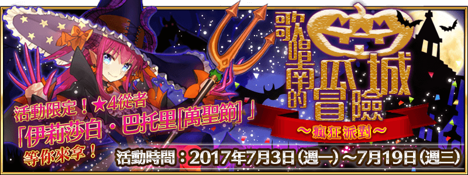

本頁面資訊僅供參考，實際情況請以遊戲內資料為準。
由於直接使用官方翻譯，可能會與其他站內翻譯相異，敬請見諒。
其他公告內容請參照日版當時公告翻譯。
- 主線關卡
-
鬼怪之森 消耗AP 推薦Lv. 初次報酬 開放條件 10 16 通過：龍之魔女 〉 職階傾向 QP Exp 絆 
40,000 1,260 350 Wave 1 1  Lv.12 鬼魂 HP7,039
Lv.12 鬼魂 HP7,0392 Lv.14 恐怖鬼魂 HP19,4033 Lv.12 鬼魂 HP7,039掉落 18% 3.5% 幻之女 消耗AP 推薦Lv. 初次報酬 開放條件 10 18 通過：前往您的身邊，我到了 〉〉〉 職階傾向 QP Exp 絆 

44,000 1,580 390 Wave 1 1  Lv.16 南瓜頭 HP3,838
Lv.16 南瓜頭 HP3,8382 Lv.16 南瓜頭 HP3,8383 Lv.16 南瓜頭 HP3,838Wave 2 1 Lv.22 南瓜頭 HP5,0502  Lv.33 甜餅魔偶 HP28,916
Lv.33 甜餅魔偶 HP28,9163 Lv.22 南瓜頭 HP5,050掉落 2450% 10% 5% 40% 150% 30% 〉〉〉 職階傾向 QP Exp 絆 
44,000 1,580 390 Wave 1 1  Lv.18 南瓜頭 HP4,116
Lv.18 南瓜頭 HP4,1162 Lv.18 南瓜頭 HP4,1163 Lv.18 南瓜頭 HP4,116Wave 2 1 Lv.20 甜餅魔偶 HP17,8602 Lv.20 甜餅魔偶 HP17,8603 Lv.30 南瓜頭 HP12,936掉落 2440% 20% 10% 32% 120% 60% 〉〉〉 職階傾向 QP Exp 絆 44,000 1,580 390 Wave 1 1 Lv.10 南瓜頭 HP2,6262 Lv.10 南瓜頭 HP2,6263 Lv.10 南瓜頭 HP2,626Wave 2 1 Lv.20 南瓜頭 HP4,6462  Lv.24 瑪塔．哈里 HP60,487
Lv.24 瑪塔．哈里 HP60,4873 Lv.20 南瓜頭 HP4,646掉落 26450% 40% 150% 70% 29.5% 0.5% 鮮血淋漓的番茄女王 消耗AP 推薦Lv. 初次報酬 開放條件 10 18 通過：幻之女 〉〉〉 職階傾向 QP Exp 絆 

44,000 1,580 390 Wave 1 1  Lv.18 南瓜頭 HP4,284
Lv.18 南瓜頭 HP4,2842  Lv.20 恐懼稻草人 HP11,730
Lv.20 恐懼稻草人 HP11,7303 Lv.18 南瓜頭 HP4,284Wave 2 1 Lv.18 恐懼稻草人 HP10,6132 Lv.24 恐懼稻草人 HP27,929掉落 2420% 60% 15% 16% 60% 120% 〉〉〉 職階傾向 QP Exp 絆 44,000 1,580 390 Wave 1 1 Lv.12 恐懼稻草人 HP7,2612 Lv.22 南瓜頭 HP5,1003 Lv.12 恐懼稻草人 HP7,261Wave 2 1 Lv.14 恐懼稻草人 HP8,3782 Lv.14 恐懼稻草人 HP8,3783 Lv.24 恐懼稻草人 HP27,929掉落 2410% 100% 25% 8% 30% 200% 〉〉〉 職階傾向 QP Exp 絆 44,000 1,580 390 Wave 1 1 Lv.6 甜餅魔偶 HP5,9532 Lv.4 恐懼稻草人 HP2,7923 Lv.4 恐懼稻草人 HP2,792Wave 2 1 Lv.14 恐懼稻草人 HP8,3782  Lv.24 卡米拉 HP63,546
Lv.24 卡米拉 HP63,5463 Lv.14 恐懼稻草人 HP8,378掉落 446380% 10% 20% 5% 30% 160% 70% 29% 1% 刺穿公隱秘的愉悅 消耗AP 推薦Lv. 初次報酬 開放條件 10 20 通過：鮮血淋漓的番茄女王 〉〉〉〉 職階傾向 QP Exp 絆 
48,000 1,910 430 Wave 1 1 Lv.16 驚怖飛龍 HP41,472掉落 310% 8% 30% 〉〉〉〉 職階傾向 QP Exp 絆 48,000 1,910 430 Wave 1 1 Lv.22 南瓜頭 HP5,1002 Lv.16 恐懼稻草人 HP9,4953 Lv.22 南瓜頭 HP5,100Wave 2 1 Lv.12 驚怖飛龍 HP15,5522 Lv.16 驚怖飛龍 HP24,883掉落 24320% 20% 20% 5% 16% 16% 60% 40% 60% 〉〉〉〉 職階傾向 QP Exp 絆 48,000 1,910 430 Wave 1 1 Lv.12 恐懼稻草人 HP7,2612 Lv.8 驚怖飛龍 HP10,3683 Lv.12 恐懼稻草人 HP7,261Wave 2 1 Lv.10 驚怖飛龍 HP12,9602 Lv.16 驚怖飛龍 HP24,8833 Lv.10 驚怖飛龍 HP12,960掉落 4340% 40% 10% 32% 80% 120% 〉〉〉〉 職階傾向 QP Exp 絆 48,000 1,910 430 Wave 1 1 Lv.12 南瓜頭 HP3,0602 Lv.12 南瓜頭 HP3,0603 Lv.12 南瓜頭 HP3,060Wave 2 1 Lv.12 驚怖飛龍 HP15,5522  Lv.26 弗拉德三世 HP74,477
Lv.26 弗拉德三世 HP74,4773 Lv.12 驚怖飛龍 HP15,552掉落 23530% 20% 16% 24% 90% 89.2% 70% 0.8% 興致高昂的女僕貓 消耗AP 推薦Lv. 初次報酬 開放條件 10 20 通過：刺穿公隱秘的愉悅 〉〉〉〉 職階傾向 QP Exp 絆 48,000 1,910 430 Wave 1 1 Lv.12 恐懼稻草人 HP7,2612 Lv.12 恐懼稻草人 HP7,2613 Lv.12 恐懼稻草人 HP7,261Wave 2 1 Lv.14 恐懼稻草人 HP8,3782 Lv.22 餓狼 HP24,9083 Lv.14 恐懼稻草人 HP8,378掉落 64100% 10% 5% 25% 30% 200% 〉〉〉〉 職階傾向 QP Exp 絆 48,000 1,910 430 Wave 1 1 Lv.12 餓狼 HP7,0392 Lv.12 餓狼 HP7,0393 Lv.16 恐懼稻草人 HP9,495Wave 2 1 Lv.16 恐懼稻草人 HP9,4952 Lv.24 恐懼稻草人 HP27,9293 Lv.16 恐懼稻草人 HP9,495掉落 6480% 20% 10% 20% 60% 160% 〉〉〉〉 職階傾向 QP Exp 絆 48,000 1,910 430 Wave 1 1 Lv.12 恐懼稻草人 HP7,2612 Lv.12 恐懼稻草人 HP7,2613 Lv.12 恐懼稻草人 HP7,261Wave 2 1 Lv.20 餓狼 HP11,3712 Lv.26 恐懼稻草人 HP30,1633 Lv.20 餓狼 HP11,371掉落 6480% 20% 10% 20% 60% 160% 〉〉〉〉 職階傾向 QP Exp 絆 48,000 1,910 430 Wave 1 1 Lv.10 餓狼 HP5,9562 Lv.10 餓狼 HP5,9563 Lv.10 餓狼 HP5,956Wave 2 1 Lv.12 餓狼 HP7,0392  Lv.28 玉藻貓 HP92,206
Lv.28 玉藻貓 HP92,2063 Lv.12 餓狼 HP7,039掉落 65750% 25% 150% 29.2% 70% 0.8% 為你演奏的旋律 消耗AP 推薦Lv. 初次報酬 開放條件 10 22 通過：興致高昂的女僕貓 〉〉〉〉 職階傾向 QP Exp 絆 52,000 2,240 470 Wave 1 1 Lv.14 南瓜頭 HP3,4342 Lv.14 南瓜頭 HP3,4683 Lv.14 南瓜頭 HP3,332Wave 2 1 Lv.20 南瓜頭 HP4,6462 Lv.20 南瓜頭 HP4,6463 Lv.20 南瓜頭 HP4,508Wave 3 1 Lv.30 南瓜頭 HP6,7322 Lv.40 南瓜首領 HP17,5443 Lv.30 南瓜頭 HP6,732掉落 24330% 20% 30% 94% 240% 30% 40% 〉〉〉〉 職階傾向 QP Exp 絆 52,000 2,240 470 Wave 1 1 Lv.12 餓狼 HP7,0392 Lv.14 恐懼稻草人 HP8,3783 Lv.12 餓狼 HP7,039Wave 2 1 Lv.14 恐懼稻草人 HP8,3782 Lv.14 恐懼稻草人 HP8,378Wave 3 1 Lv.30 南瓜頭 HP6,6662 Lv.20 驚怖飛龍 HP25,9203 Lv.30 南瓜頭 HP6,666掉落 264320% 10% 60% 20% 10% 15% 8% 16% 60% 60% 120% 30% 〉〉〉〉 職階傾向 QP Exp 絆 52,000 2,240 470 Wave 1 1  Lv.22 瘋龍 HP96,170
Lv.22 瘋龍 HP96,170掉落 468% 22% 70% 〉〉〉〉 職階傾向 QP Exp 絆 52,000 2,240 470 Wave 1 1  Lv.30 伊莉莎白 HP106,814
Lv.30 伊莉莎白 HP106,814掉落 10339% 60% 1% - 自由關卡
-
第一幕 消耗AP 推薦Lv. 初次報酬 開放條件 10 20 57/3 13:00~7/19 12:59
通過：幻之女∞ 職階傾向 QP Exp 絆 2,400 955 215 Wave 1 1 Lv.8 骷髏兵 HP2,222 Lv.8 骷髏兵 HP2,2442 Lv.8 南瓜頭 HP2,2223 Lv.8 骷髏兵 HP2,222 Lv.8 骷髏兵 HP2,244Wave 2 1 Lv.10 骷髏兵 HP2,652 Lv.8 南瓜頭 HP2,2222 Lv.10 南瓜頭 HP2,652 Lv.10 恐懼稻草人 HP6,1443 Lv.10 骷髏兵 HP2,626 Lv.8 南瓜頭 HP2,244Wave 3 1 Lv.10 南瓜頭 HP7,8782 Lv.20 瑪塔．哈里 HP48,0693 Lv.10 南瓜頭 HP7,878掉落 26442.5% 17.5% 10% 2.5% 45% 135% 70% 49.5% 0.5% 第二幕 消耗AP 推薦Lv. 初次報酬 開放條件 20 30 57/3 13:00~7/19 12:59
通過：鮮血淋漓的番茄女王∞ 職階傾向 QP Exp 絆 3,400 2,190 315 Wave 1 1 Lv.14 南瓜頭 HP3,468 Lv.14 甜餅魔偶 HP12,7572 Lv.14 南瓜頭 HP3,4683 Lv.14 南瓜頭 HP3,468 Lv.14 甜餅魔偶 HP12,757Wave 2 1 Lv.16 甜餅魔偶 HP14,4582 Lv.20 南瓜頭 HP4,692 Lv.14 恐懼稻草人 HP8,3783 Lv.16 甜餅魔偶 HP14,458Wave 3 1 Lv.14 恐懼稻草人 HP8,3782 Lv.30 卡米拉 HP78,4743 Lv.14 恐懼稻草人 HP8,378掉落 2446325% 50% 30% 12.5% 15% 20% 75% 90% 100% 70% 29% 1% 第三幕 消耗AP 推薦Lv. 初次報酬 開放條件 30 40 57/3 13:00~7/19 12:59
通過：刺穿公隱秘的愉悅∞ 職階傾向 QP Exp 絆 4,400 5,690 415 Wave 1 1 Lv.20 南瓜頭 HP4,692 Lv.16 恐懼稻草人 HP9,4952 Lv.16 恐懼稻草人 HP9,4953 Lv.20 南瓜頭 HP4,692 Lv.16 恐懼稻草人 HP9,495Wave 2 1 Lv.20 恐懼稻草人 HP11,7302 Lv.20 南瓜頭 HP4,692 Lv.12 驚怖飛龍 HP15,5523 Lv.20 恐懼稻草人 HP11,730Wave 3 1 Lv.30 南瓜頭 HP20,196 Lv.14 驚怖飛龍 HP18,1442 Lv.40 弗拉德三世 HP114,6933 Lv.30 南瓜頭 HP20,196 Lv.14 驚怖飛龍 HP18,144掉落 243525% 15% 80% 20% 12% 20% 75% 160% 74.2% 70% 0.8% 最終幕 消耗AP 推薦Lv. 初次報酬 開放條件 40 50 57/3 13:00~7/19 12:59
通過：興致高昂的女僕貓∞ 職階傾向 QP Exp 絆 
5,400 10,190 515 Wave 1 1 Lv.20 恐懼稻草人 HP11,730 Lv.20 餓狼 HP11,3712 Lv.20 恐懼稻草人 HP11,7303 Lv.20 恐懼稻草人 HP11,730 Lv.20 餓狼 HP11,371Wave 2 1 Lv.24 恐懼稻草人 HP13,9642 Lv.24 恐懼稻草人 HP13,964 Lv.14 驚怖飛龍 HP18,1443 Lv.24 恐懼稻草人 HP13,964Wave 3 1 Lv.50 南瓜首領 HP10,7062 Lv.50 玉藻貓 HP156,0583 Lv.33 恐懼稻草人 HP18,992掉落 46435735% 110% 10% 5% 27.5% 4% 30% 30% 30% 220% 15% 29.2% 70% 40% 0.8% 安可演出 消耗AP 推薦Lv. 初次報酬 開放條件 50 80 7/3 13:00~7/19 12:59
通過：為你演奏的旋律∞ 職階傾向 QP Exp 絆 8,400 29,690 815 Wave 1 1  Lv.40 影舞者 HP40,928
Lv.40 影舞者 HP40,9282 Lv.40 影舞者 HP40,9283 Lv.40 影舞者 HP40,928Wave 2 1 Lv.80 伊莉莎白 HP415,450掉落 8510345% 30% 135% 90% 39% 60% 1% - 派對關卡
-
英勇派對 -I- 消耗AP 推薦Lv. 初次報酬 開放條件 20 20 7/3 13:00~7/19 12:59
通過：鬼怪之森〉 職階傾向 QP Exp 絆 2,400 955 215 Wave 1 1 Lv.10 荊軻 HP4,7582  Lv.10 斯巴達克斯 HP4,972
Lv.10 斯巴達克斯 HP4,9723 Lv.10 羅賓漢 HP5,845Wave 2 1 Lv.10 赫拉克勒斯 HP5,2802 Lv.10 吉爾 HP6,0233 Lv.10 阿拉什 HP4,586Wave 3 1  Lv.25 Emiya HP28,698
Lv.25 Emiya HP28,698掉落 515% 35% 15% 20% 5% 10% 5% 134% 1% 英勇派對 -II- 消耗AP 推薦Lv. 初次報酬 開放條件 20 20 7/4 12:00~7/19 12:59
通過：鬼怪之森〉 職階傾向 QP Exp 絆 2,400 955 215 Wave 1 1 Lv.10 荊軻 HP4,7582 Lv.10 斯巴達克斯 HP4,9723 Lv.10 羅賓漢 HP5,845Wave 2 1 Lv.10 赫拉克勒斯 HP5,2802 Lv.10 吉爾 HP6,0233 Lv.10 阿拉什 HP4,586Wave 3 1 Lv.25 Emiya HP28,698掉落 515% 35% 15% 20% 5% 10% 5% 134% 1% 英勇派對 -III- 消耗AP 推薦Lv. 初次報酬 開放條件 20 20 7/4 20:00~7/19 12:59
通過：鬼怪之森〉 職階傾向 QP Exp 絆 2,400 955 215 Wave 1 1 Lv.10 荊軻 HP4,7582 Lv.10 斯巴達克斯 HP4,9723 Lv.10 羅賓漢 HP5,845Wave 2 1 Lv.10 赫拉克勒斯 HP5,2802 Lv.10 吉爾 HP6,0233 Lv.10 阿拉什 HP4,586Wave 3 1 Lv.25 Emiya HP28,698掉落 515% 35% 15% 20% 5% 10% 5% 134% 1% 英勇派對 -IV- 消耗AP 推薦Lv. 初次報酬 開放條件 20 20 7/5 12:00~7/19 12:59
通過：鬼怪之森〉 職階傾向 QP Exp 絆 2,400 955 215 Wave 1 1 Lv.10 荊軻 HP4,7582 Lv.10 斯巴達克斯 HP4,9723 Lv.10 羅賓漢 HP5,845Wave 2 1 Lv.10 赫拉克勒斯 HP5,2802 Lv.10 吉爾 HP6,0233 Lv.10 阿拉什 HP4,586Wave 3 1 Lv.25 Emiya HP28,698掉落 515% 35% 15% 20% 5% 10% 5% 134% 1% 英勇派對 -V- 消耗AP 推薦Lv. 初次報酬 開放條件 20 20 7/5 20:00~7/19 12:59
通過：鬼怪之森〉 職階傾向 QP Exp 絆 2,400 955 215 Wave 1 1 Lv.10 荊軻 HP4,7582 Lv.10 斯巴達克斯 HP4,9723 Lv.10 羅賓漢 HP5,845Wave 2 1 Lv.10 赫拉克勒斯 HP5,2802 Lv.10 吉爾 HP6,0233 Lv.10 阿拉什 HP4,586Wave 3 1 Lv.25 Emiya HP28,698掉落 515% 35% 15% 20% 5% 10% 5% 134% 1% 神秘派對 -I- 消耗AP 推薦Lv. 初次報酬 開放條件 20 25 7/6 12:00~7/19 12:59
通過：前往您的身邊，我到了〉 職階傾向 QP Exp 絆 2,900 1,385 265 Wave 1 1 Lv.15 劇院魅影 HP6,1402 Lv.15 安徒生 HP6,2073 Lv.15 梅菲斯托費勒斯 HP6,384Wave 2 1 Lv.15 牛若丸 HP12,5082  Lv.15 德翁 HP8,188
Lv.15 德翁 HP8,1883 Lv.15 阿斯忒里翁 HP5,147Wave 3 1 Lv.30 美杜莎 HP37,506掉落 510% 25% 25% 10% 15% 10% 5% 5% 134% 1% 神秘派對 -II- 消耗AP 推薦Lv. 初次報酬 開放條件 20 25 7/6 20:00~7/19 12:59
通過：前往您的身邊，我到了〉 職階傾向 QP Exp 絆 2,900 1,385 265 Wave 1 1 Lv.15 劇院魅影 HP6,1402 Lv.15 安徒生 HP6,2073 Lv.15 梅菲斯托費勒斯 HP6,384Wave 2 1 Lv.15 牛若丸 HP12,5082 Lv.15 德翁 HP8,1883 Lv.15 阿斯忒里翁 HP5,147Wave 3 1 Lv.30 美杜莎 HP37,506掉落 510% 25% 25% 10% 15% 10% 5% 5% 134% 1% 神秘派對 -III- 消耗AP 推薦Lv. 初次報酬 開放條件 20 25 7/7 12:00~7/19 12:59
通過：前往您的身邊，我到了〉 職階傾向 QP Exp 絆 2,900 1,385 265 Wave 1 1 Lv.15 劇院魅影 HP6,1402 Lv.15 安徒生 HP6,2073 Lv.15 梅菲斯托費勒斯 HP6,384Wave 2 1 Lv.15 牛若丸 HP12,5082 Lv.15 德翁 HP8,1883 Lv.15 阿斯忒里翁 HP5,147Wave 3 1 Lv.30 美杜莎 HP37,506掉落 510% 25% 25% 10% 15% 10% 5% 5% 134% 1% 神秘派對 -IV- 消耗AP 推薦Lv. 初次報酬 開放條件 20 25 7/7 20:00~7/19 12:59
通過：前往您的身邊，我到了〉 職階傾向 QP Exp 絆 2,900 1,385 265 Wave 1 1 Lv.15 劇院魅影 HP6,1402 Lv.15 安徒生 HP6,2073 Lv.15 梅菲斯托費勒斯 HP6,384Wave 2 1 Lv.15 牛若丸 HP12,5082 Lv.15 德翁 HP8,1883 Lv.15 阿斯忒里翁 HP5,147Wave 3 1 Lv.30 美杜莎 HP37,506掉落 510% 25% 25% 10% 15% 10% 5% 5% 134% 1% 神秘派對 -V- 消耗AP 推薦Lv. 初次報酬 開放條件 20 25 7/8 12:00~7/19 12:59
通過：前往您的身邊，我到了〉 職階傾向 QP Exp 絆 2,900 1,385 265 Wave 1 1 Lv.15 劇院魅影 HP6,1402 Lv.15 安徒生 HP6,2073 Lv.15 梅菲斯托費勒斯 HP6,384Wave 2 1 Lv.15 牛若丸 HP12,5082 Lv.15 德翁 HP8,1883 Lv.15 阿斯忒里翁 HP5,147Wave 3 1 Lv.30 美杜莎 HP37,506掉落 510% 25% 25% 10% 15% 10% 5% 5% 134% 1% 神秘派對 -VI- 消耗AP 推薦Lv. 初次報酬 開放條件 20 25 7/8 20:00~7/19 12:59
通過：前往您的身邊，我到了〉 職階傾向 QP Exp 絆 2,900 1,385 265 Wave 1 1 Lv.15 劇院魅影 HP6,1402 Lv.15 安徒生 HP6,2073 Lv.15 梅菲斯托費勒斯 HP6,384Wave 2 1 Lv.15 牛若丸 HP12,5082 Lv.15 德翁 HP8,1883 Lv.15 阿斯忒里翁 HP5,147Wave 3 1 Lv.30 美杜莎 HP37,506掉落 510% 25% 25% 10% 15% 10% 5% 5% 134% 1% 瘋狂派對 -I- 消耗AP 推薦Lv. 初次報酬 開放條件 20 30 7/9 12:00~7/19 12:59
通過：幻之女〉 職階傾向 QP Exp 絆 3,400 2,190 315 Wave 1 1 Lv.20 埃里克 HP13,1992  Lv.20 蒂奇 HP6,787
Lv.20 蒂奇 HP6,7873 Lv.20 呂布 HP13,474Wave 2 1 Lv.20 吉爾 HP7,7142 Lv.20 桑松 HP7,1323 Lv.20 蘭斯洛特 HP14,953Wave 3 1 Lv.35 阿塔蘭塔 HP26,0252  Lv.35 俄里翁 HP34,391
Lv.35 俄里翁 HP34,391掉落 5630% 20% 15% 20% 55% 15% 5% 5% 90% 74% 1% 瘋狂派對 -II- 消耗AP 推薦Lv. 初次報酬 開放條件 20 30 7/9 20:00~7/19 12:59
通過：幻之女〉 職階傾向 QP Exp 絆 3,400 2,190 315 Wave 1 1 Lv.20 埃里克 HP13,1992 Lv.20 蒂奇 HP6,7873 Lv.20 呂布 HP13,474Wave 2 1 Lv.20 吉爾 HP7,7142 Lv.20 桑松 HP7,1323 Lv.20 蘭斯洛特 HP14,953Wave 3 1 Lv.35 阿塔蘭塔 HP26,0252 Lv.35 俄里翁 HP34,391掉落 5630% 20% 15% 20% 55% 15% 5% 5% 90% 74% 1% 瘋狂派對 -III- 消耗AP 推薦Lv. 初次報酬 開放條件 20 30 7/10 12:00~7/19 12:59
通過：幻之女〉 職階傾向 QP Exp 絆 3,400 2,190 315 Wave 1 1 Lv.20 埃里克 HP13,1992 Lv.20 蒂奇 HP6,7873 Lv.20 呂布 HP13,474Wave 2 1 Lv.20 吉爾 HP7,7142 Lv.20 桑松 HP7,1323 Lv.20 蘭斯洛特 HP14,953Wave 3 1 Lv.35 阿塔蘭塔 HP26,0252 Lv.35 俄里翁 HP34,391掉落 5630% 20% 15% 20% 55% 15% 5% 5% 90% 74% 1% 瘋狂派對 -IV- 消耗AP 推薦Lv. 初次報酬 開放條件 20 30 7/10 20:00~7/19 12:59
通過：幻之女〉 職階傾向 QP Exp 絆 3,400 2,190 315 Wave 1 1 Lv.20 埃里克 HP13,1992 Lv.20 蒂奇 HP6,7873 Lv.20 呂布 HP13,474Wave 2 1 Lv.20 吉爾 HP7,7142 Lv.20 桑松 HP7,1323 Lv.20 蘭斯洛特 HP14,953Wave 3 1 Lv.35 阿塔蘭塔 HP26,0252 Lv.35 俄里翁 HP34,391掉落 5630% 20% 15% 20% 55% 15% 5% 5% 90% 74% 1% 瘋狂派對 -V- 消耗AP 推薦Lv. 初次報酬 開放條件 20 30 7/11 12:00~7/19 12:59
通過：幻之女〉 職階傾向 QP Exp 絆 3,400 2,190 315 Wave 1 1 Lv.20 埃里克 HP13,1992 Lv.20 蒂奇 HP6,7873 Lv.20 呂布 HP13,474Wave 2 1 Lv.20 吉爾 HP7,7142 Lv.20 桑松 HP7,1323 Lv.20 蘭斯洛特 HP14,953Wave 3 1 Lv.35 阿塔蘭塔 HP26,0252 Lv.35 俄里翁 HP34,391掉落 5630% 20% 15% 20% 55% 15% 5% 5% 90% 74% 1% 瘋狂派對 -VI- 消耗AP 推薦Lv. 初次報酬 開放條件 20 30 7/11 20:00~7/19 12:59
通過：幻之女〉 職階傾向 QP Exp 絆 3,400 2,190 315 Wave 1 1 Lv.20 埃里克 HP13,1992 Lv.20 蒂奇 HP6,7873 Lv.20 呂布 HP13,474Wave 2 1 Lv.20 吉爾 HP7,7142 Lv.20 桑松 HP7,1323 Lv.20 蘭斯洛特 HP14,953Wave 3 1 Lv.35 阿塔蘭塔 HP26,0252 Lv.35 俄里翁 HP34,391掉落 5630% 20% 15% 20% 55% 15% 5% 5% 90% 74% 1% 雙重派對 -I- 消耗AP 推薦Lv. 初次報酬 開放條件 20 35 7/12 12:00~7/19 12:59
通過：前往您的身邊，我到了〉 職階傾向 QP Exp 絆 3,900 3,815 365 Wave 1 1 Lv.25 庫．夫林 HP8,9242 Lv.25 庫．夫林 HP9,3943 Lv.25 庫．夫林 HP8,934Wave 2 1  Lv.25 阿爾托莉亞 HP11,416
Lv.25 阿爾托莉亞 HP11,4162 Lv.25 Saber．Lily HP8,8203 Lv.25 Saber．Alter HP19,245Wave 3 1  Lv.40 貞德 HP17,179
Lv.40 貞德 HP17,1792  Lv.40 貞德．Alter HP38,401
Lv.40 貞德．Alter HP38,401掉落 5660% 40% 5% 25% 10% 8.5% 8.5% 2% 2% 5.5% 90% 73.5% 1% 雙重派對 -II- 消耗AP 推薦Lv. 初次報酬 開放條件 20 35 7/12 20:00~7/19 12:59
通過：前往您的身邊，我到了〉 職階傾向 QP Exp 絆 3,900 3,815 365 Wave 1 1 Lv.25 庫．夫林 HP8,9242 Lv.25 庫．夫林 HP9,3943 Lv.25 庫．夫林 HP8,934Wave 2 1 Lv.25 阿爾托莉亞 HP11,4162 Lv.25 Saber．Lily HP8,8203 Lv.25 Saber．Alter HP19,245Wave 3 1 Lv.40 貞德 HP17,1792 Lv.40 貞德．Alter HP38,401掉落 5660% 40% 5% 25% 10% 8.5% 8.5% 2% 2% 5.5% 90% 73.5% 1% 雙重派對 -III- 消耗AP 推薦Lv. 初次報酬 開放條件 20 35 7/13 12:00~7/19 12:59
通過：前往您的身邊，我到了〉 職階傾向 QP Exp 絆 3,900 3,815 365 Wave 1 1 Lv.25 庫．夫林 HP8,9242 Lv.25 庫．夫林 HP9,3943 Lv.25 庫．夫林 HP8,934Wave 2 1 Lv.25 阿爾托莉亞 HP11,4162 Lv.25 Saber．Lily HP8,8203 Lv.25 Saber．Alter HP19,245Wave 3 1 Lv.40 貞德 HP17,1792 Lv.40 貞德．Alter HP38,401掉落 5660% 40% 5% 25% 10% 8.5% 8.5% 2% 2% 5.5% 90% 73.5% 1% 雙重派對 -IV- 消耗AP 推薦Lv. 初次報酬 開放條件 20 35 7/13 20:00~7/19 12:59
通過：前往您的身邊，我到了〉 職階傾向 QP Exp 絆 3,900 3,815 365 Wave 1 1 Lv.25 庫．夫林 HP8,9242 Lv.25 庫．夫林 HP9,3943 Lv.25 庫．夫林 HP8,934Wave 2 1 Lv.25 阿爾托莉亞 HP11,4162 Lv.25 Saber．Lily HP8,8203 Lv.25 Saber．Alter HP19,245Wave 3 1 Lv.40 貞德 HP17,1792 Lv.40 貞德．Alter HP38,401掉落 5660% 40% 5% 25% 10% 8.5% 8.5% 2% 2% 5.5% 90% 73.5% 1% 雙重派對 -V- 消耗AP 推薦Lv. 初次報酬 開放條件 20 35 7/14 12:00~7/19 12:59
通過：前往您的身邊，我到了〉 職階傾向 QP Exp 絆 3,900 3,815 365 Wave 1 1 Lv.25 庫．夫林 HP8,9242 Lv.25 庫．夫林 HP9,3943 Lv.25 庫．夫林 HP8,934Wave 2 1 Lv.25 阿爾托莉亞 HP11,4162 Lv.25 Saber．Lily HP8,8203 Lv.25 Saber．Alter HP19,245Wave 3 1 Lv.40 貞德 HP17,1792 Lv.40 貞德．Alter HP38,401掉落 5660% 40% 5% 25% 10% 8.5% 8.5% 2% 2% 5.5% 90% 73.5% 1% 雙重派對 -VI- 消耗AP 推薦Lv. 初次報酬 開放條件 20 35 7/14 20:00~7/19 12:59
通過：前往您的身邊，我到了〉 職階傾向 QP Exp 絆 3,900 3,815 365 Wave 1 1 Lv.25 庫．夫林 HP8,9242 Lv.25 庫．夫林 HP9,3943 Lv.25 庫．夫林 HP8,934Wave 2 1 Lv.25 阿爾托莉亞 HP11,4162 Lv.25 Saber．Lily HP8,8203 Lv.25 Saber．Alter HP19,245Wave 3 1 Lv.40 貞德 HP17,1792 Lv.40 貞德．Alter HP38,401掉落 5660% 40% 5% 25% 10% 8.5% 8.5% 2% 2% 5.5% 90% 73.5% 1% 皇家派對 -I- 消耗AP 推薦Lv. 初次報酬 開放條件 20 40 7/15 12:00~7/19 12:59
通過：鮮血淋漓的番茄女王〉 職階傾向 QP Exp 絆 4,400 5,690 415 Wave 1 1  Lv.30 瑪爾大 HP12,239
Lv.30 瑪爾大 HP12,2392 Lv.30 布狄卡 HP10,6283 Lv.30 尤瑞艾莉 HP9,974Wave 2 1 Lv.30 瑪莉．安東尼 HP11,5652 Lv.30 莎士比亞 HP8,9853 Lv.30 絲忒諾 HP10,789Wave 3 1 Lv.45 尼祿 HP22,1362 Lv.45 坂田金時 HP34,5383 Lv.45 吉爾伽美什 HP22,337掉落 5715% 35% 55% 20% 15% 15% 5% 5% 5% 5% 10% 120% 74% 1% 皇家派對 -II- 消耗AP 推薦Lv. 初次報酬 開放條件 20 40 7/15 20:00~7/19 12:59
通過：鮮血淋漓的番茄女王〉 職階傾向 QP Exp 絆 4,400 5,690 415 Wave 1 1 Lv.30 瑪爾大 HP12,2392 Lv.30 布狄卡 HP10,6283 Lv.30 尤瑞艾莉 HP9,974Wave 2 1 Lv.30 瑪莉．安東尼 HP11,5652 Lv.30 莎士比亞 HP8,9853 Lv.30 絲忒諾 HP10,789Wave 3 1 Lv.45 尼祿 HP22,1362 Lv.45 坂田金時 HP34,5383 Lv.45 吉爾伽美什 HP22,337掉落 5715% 35% 55% 20% 15% 15% 5% 5% 5% 5% 10% 120% 74% 1% 皇家派對 -III- 消耗AP 推薦Lv. 初次報酬 開放條件 20 40 7/16 12:00~7/19 12:59
通過：鮮血淋漓的番茄女王〉 職階傾向 QP Exp 絆 4,400 5,690 415 Wave 1 1 Lv.30 瑪爾大 HP12,2392 Lv.30 布狄卡 HP10,6283 Lv.30 尤瑞艾莉 HP9,974Wave 2 1 Lv.30 瑪莉．安東尼 HP11,5652 Lv.30 莎士比亞 HP8,9853 Lv.30 絲忒諾 HP10,789Wave 3 1 Lv.45 尼祿 HP22,1362 Lv.45 坂田金時 HP34,5383 Lv.45 吉爾伽美什 HP22,337掉落 5715% 35% 55% 20% 15% 15% 5% 5% 5% 5% 10% 120% 74% 1% 皇家派對 -IV- 消耗AP 推薦Lv. 初次報酬 開放條件 20 40 7/16 20:00~7/19 12:59
通過：鮮血淋漓的番茄女王〉 職階傾向 QP Exp 絆 4,400 5,690 415 Wave 1 1 Lv.30 瑪爾大 HP12,2392 Lv.30 布狄卡 HP10,6283 Lv.30 尤瑞艾莉 HP9,974Wave 2 1 Lv.30 瑪莉．安東尼 HP11,5652 Lv.30 莎士比亞 HP8,9853 Lv.30 絲忒諾 HP10,789Wave 3 1 Lv.45 尼祿 HP22,1362 Lv.45 坂田金時 HP34,5383 Lv.45 吉爾伽美什 HP22,337掉落 5715% 35% 55% 20% 15% 15% 5% 5% 5% 5% 10% 120% 74% 1% 皇家派對 -V- 消耗AP 推薦Lv. 初次報酬 開放條件 20 40 7/17 12:00~7/19 12:59
通過：鮮血淋漓的番茄女王〉 職階傾向 QP Exp 絆 4,400 5,690 415 Wave 1 1 Lv.30 瑪爾大 HP12,2392 Lv.30 布狄卡 HP10,6283 Lv.30 尤瑞艾莉 HP9,974Wave 2 1 Lv.30 瑪莉．安東尼 HP11,5652 Lv.30 莎士比亞 HP8,9853 Lv.30 絲忒諾 HP10,789Wave 3 1 Lv.45 尼祿 HP22,1362 Lv.45 坂田金時 HP34,5383 Lv.45 吉爾伽美什 HP22,337掉落 5715% 35% 55% 20% 15% 15% 5% 5% 5% 5% 10% 120% 74% 1% 皇家派對 -VI- 消耗AP 推薦Lv. 初次報酬 開放條件 20 40 7/17 20:00~7/19 12:59
通過：鮮血淋漓的番茄女王〉 職階傾向 QP Exp 絆 4,400 5,690 415 Wave 1 1 Lv.30 瑪爾大 HP12,2392 Lv.30 布狄卡 HP10,6283 Lv.30 尤瑞艾莉 HP9,974Wave 2 1 Lv.30 瑪莉．安東尼 HP11,5652 Lv.30 莎士比亞 HP8,9853 Lv.30 絲忒諾 HP10,789Wave 3 1 Lv.45 尼祿 HP22,1362 Lv.45 坂田金時 HP34,5383 Lv.45 吉爾伽美什 HP22,337掉落 5715% 35% 55% 20% 15% 15% 5% 5% 5% 5% 10% 120% 74% 1% 皇家派對 -VII- 消耗AP 推薦Lv. 初次報酬 開放條件 20 40 7/18 12:00~7/19 12:59
通過：鮮血淋漓的番茄女王〉 職階傾向 QP Exp 絆 4,400 5,690 415 Wave 1 1 Lv.30 瑪爾大 HP12,2392 Lv.30 布狄卡 HP10,6283 Lv.30 尤瑞艾莉 HP9,974Wave 2 1 Lv.30 瑪莉．安東尼 HP11,5652 Lv.30 莎士比亞 HP8,9853 Lv.30 絲忒諾 HP10,789Wave 3 1 Lv.45 尼祿 HP22,1362 Lv.45 坂田金時 HP34,5383 Lv.45 吉爾伽美什 HP22,337掉落 5715% 35% 55% 20% 15% 15% 5% 5% 5% 5% 10% 120% 74% 1% - 游擊關卡
-
暗夜的訪問者 ～納骨堂之怪～1 消耗AP 推薦Lv. 初次報酬 開放條件 30 30 7/4 0:00~7/19 12:59
通過：前往您的身邊，我到了〉 職階傾向 QP Exp 絆 3,400 2,190 315 Wave 1 1 Lv.10 南瓜頭 HP2,6522 Lv.10 南瓜頭 HP2,6523 Lv.10 黎明之腕 HP2,652Wave 2 1 Lv.10 南瓜頭 HP2,6522 Lv.10 黎明之剛腕 HP6,7323 Lv.10 黎明之剛腕 HP6,732Wave 3 1 Lv.20 南瓜首領 HP4,6922 Lv.30 試膽的哈桑 HP76,0053 Lv.20 黎明之神腕 HP28,975掉落 244330% 54% 15% 5% 90% 30% 79% 40% 1% 暗夜的訪問者 ～納骨堂之怪～2 消耗AP 推薦Lv. 初次報酬 開放條件 30 30 7/4 10:00~7/19 12:59
通過：幻之女〉 職階傾向 QP Exp 絆 3,400 2,190 315 Wave 1 1 Lv.10 南瓜頭 HP2,6522 Lv.10 南瓜頭 HP2,6523 Lv.10 黎明之腕 HP2,652Wave 2 1 Lv.10 南瓜頭 HP2,6522 Lv.10 黎明之剛腕 HP6,7323 Lv.10 黎明之剛腕 HP6,732Wave 3 1 Lv.20 南瓜首領 HP4,6922 Lv.30 試膽的哈桑 HP76,0053 Lv.20 黎明之神腕 HP28,975掉落 244330% 54% 15% 5% 90% 30% 79% 40% 1% 暗夜的訪問者 ～納骨堂之怪～3 消耗AP 推薦Lv. 初次報酬 開放條件 30 30 7/4 14:00~7/19 12:59
通過：幻之女〉 職階傾向 QP Exp 絆 3,400 2,190 315 Wave 1 1 Lv.10 南瓜頭 HP2,6522 Lv.10 南瓜頭 HP2,6523 Lv.10 黎明之腕 HP2,652Wave 2 1 Lv.10 南瓜頭 HP2,6522 Lv.10 黎明之剛腕 HP6,7323 Lv.10 黎明之剛腕 HP6,732Wave 3 1 Lv.20 南瓜首領 HP4,6922 Lv.30 試膽的哈桑 HP76,0053 Lv.20 黎明之神腕 HP28,975掉落 244330% 54% 15% 5% 90% 30% 79% 40% 1% 暗夜的訪問者 ～納骨堂之怪～4 消耗AP 推薦Lv. 初次報酬 開放條件 30 30 7/4 15:00~7/19 12:59
通過：幻之女〉 職階傾向 QP Exp 絆 3,400 2,190 315 Wave 1 1 Lv.10 南瓜頭 HP2,6522 Lv.10 南瓜頭 HP2,6523 Lv.10 黎明之腕 HP2,652Wave 2 1 Lv.10 南瓜頭 HP2,6522 Lv.10 黎明之剛腕 HP6,7323 Lv.10 黎明之剛腕 HP6,732Wave 3 1 Lv.20 南瓜首領 HP4,6922 Lv.30 試膽的哈桑 HP76,0053 Lv.20 黎明之神腕 HP28,975掉落 244330% 54% 15% 5% 90% 30% 79% 40% 1% 暗夜的訪問者 ～納骨堂之怪～5 消耗AP 推薦Lv. 初次報酬 開放條件 30 30 7/4 22:00~7/19 12:59
通過：幻之女〉 職階傾向 QP Exp 絆 3,400 2,190 315 Wave 1 1 Lv.10 南瓜頭 HP2,6522 Lv.10 南瓜頭 HP2,6523 Lv.10 黎明之腕 HP2,652Wave 2 1 Lv.10 南瓜頭 HP2,6522 Lv.10 黎明之剛腕 HP6,7323 Lv.10 黎明之剛腕 HP6,732Wave 3 1 Lv.20 南瓜首領 HP4,6922 Lv.30 試膽的哈桑 HP76,0053 Lv.20 黎明之神腕 HP28,975掉落 244330% 54% 15% 5% 90% 30% 79% 40% 1% 暗夜的訪問者 ～納骨堂之怪～6 消耗AP 推薦Lv. 初次報酬 開放條件 30 30 7/8 7:00~7/19 12:59
通過：前往您的身邊，我到了〉 職階傾向 QP Exp 絆 3,400 2,190 315 Wave 1 1 Lv.10 南瓜頭 HP2,6522 Lv.10 南瓜頭 HP2,6523 Lv.10 黎明之腕 HP2,652Wave 2 1 Lv.10 南瓜頭 HP2,6522 Lv.10 黎明之剛腕 HP6,7323 Lv.10 黎明之剛腕 HP6,732Wave 3 1 Lv.20 南瓜首領 HP4,6922 Lv.30 試膽的哈桑 HP76,0053 Lv.20 黎明之神腕 HP28,975掉落 244330% 54% 15% 5% 90% 30% 79% 40% 1% 暗夜的訪問者 ～納骨堂之怪～7 消耗AP 推薦Lv. 初次報酬 開放條件 30 30 7/8 16:00~7/19 12:59
通過：前往您的身邊，我到了〉 職階傾向 QP Exp 絆 3,400 2,190 315 Wave 1 1 Lv.10 南瓜頭 HP2,6522 Lv.10 南瓜頭 HP2,6523 Lv.10 黎明之腕 HP2,652Wave 2 1 Lv.10 南瓜頭 HP2,6522 Lv.10 黎明之剛腕 HP6,7323 Lv.10 黎明之剛腕 HP6,732Wave 3 1 Lv.20 南瓜首領 HP4,6922 Lv.30 試膽的哈桑 HP76,0053 Lv.20 黎明之神腕 HP28,975掉落 244330% 54% 15% 5% 90% 30% 79% 40% 1% 暗夜的訪問者 ～納骨堂之怪～8 消耗AP 推薦Lv. 初次報酬 開放條件 30 30 7/8 18:00~7/19 12:59
通過：前往您的身邊，我到了〉 職階傾向 QP Exp 絆 3,400 2,190 315 Wave 1 1 Lv.10 南瓜頭 HP2,6522 Lv.10 南瓜頭 HP2,6523 Lv.10 黎明之腕 HP2,652Wave 2 1 Lv.10 南瓜頭 HP2,6522 Lv.10 黎明之剛腕 HP6,7323 Lv.10 黎明之剛腕 HP6,732Wave 3 1 Lv.20 南瓜首領 HP4,6922 Lv.30 試膽的哈桑 HP76,0053 Lv.20 黎明之神腕 HP28,975掉落 244330% 54% 15% 5% 90% 30% 79% 40% 1% 暗夜的訪問者 ～納骨堂之怪～9 消耗AP 推薦Lv. 初次報酬 開放條件 30 30 7/8 23:00~7/19 12:59
通過：前往您的身邊，我到了〉 職階傾向 QP Exp 絆 3,400 2,190 315 Wave 1 1 Lv.10 南瓜頭 HP2,6522 Lv.10 南瓜頭 HP2,6523 Lv.10 黎明之腕 HP2,652Wave 2 1 Lv.10 南瓜頭 HP2,6522 Lv.10 黎明之剛腕 HP6,7323 Lv.10 黎明之剛腕 HP6,732Wave 3 1 Lv.20 南瓜首領 HP4,6922 Lv.30 試膽的哈桑 HP76,0053 Lv.20 黎明之神腕 HP28,975掉落 244330% 54% 15% 5% 90% 30% 79% 40% 1% 雨夜的訪問者 ～龍之宴～ 1 消耗AP 推薦Lv. 初次報酬 開放條件 30 40 7/14 10:00~7/19 12:59
通過：鬼怪之森〉 職階傾向 QP Exp 絆 4,400 5,690 415 Wave 1 1  Lv.10 亞馬遜人 HP6,998
Lv.10 亞馬遜人 HP6,9982 Lv.10 亞馬遜人 HP6,9983 Lv.10 亞馬遜人 HP6,998Wave 2 1 Lv.10 恐懼稻草人 HP6,1442 Lv.20 亞馬遜隊長 HP20,3313 Lv.10 恐懼稻草人 HP6,144Wave 3 1 Lv.30 南瓜首領 HP6,6662 Lv.40 盤空降臨的最強魔龍 HP97,6823 Lv.22 亞馬遜女王 HP29,330掉落 445324% 40% 5% 3% 8% 9% 10% 30% 15% 5% 30% 80% 79% 40% 1% 雨夜的訪問者 ～龍之宴～ 2 消耗AP 推薦Lv. 初次報酬 開放條件 30 40 7/14 11:00~7/19 12:59
通過：鬼怪之森〉 職階傾向 QP Exp 絆 4,400 5,690 415 Wave 1 1 Lv.10 亞馬遜人 HP6,9982 Lv.10 亞馬遜人 HP6,9983 Lv.10 亞馬遜人 HP6,998Wave 2 1 Lv.10 恐懼稻草人 HP6,1442 Lv.20 亞馬遜隊長 HP20,3313 Lv.10 恐懼稻草人 HP6,144Wave 3 1 Lv.30 南瓜首領 HP6,6662 Lv.40 盤空降臨的最強魔龍 HP97,6823 Lv.22 亞馬遜女王 HP29,330掉落 445324% 40% 5% 3% 8% 9% 10% 30% 15% 5% 30% 80% 79% 40% 1% 雨夜的訪問者 ～龍之宴～ 3 消耗AP 推薦Lv. 初次報酬 開放條件 30 40 7/14 14:00~7/19 12:59
通過：鬼怪之森〉 職階傾向 QP Exp 絆 4,400 5,690 415 Wave 1 1 Lv.10 亞馬遜人 HP6,9982 Lv.10 亞馬遜人 HP6,9983 Lv.10 亞馬遜人 HP6,998Wave 2 1 Lv.10 恐懼稻草人 HP6,1442 Lv.20 亞馬遜隊長 HP20,3313 Lv.10 恐懼稻草人 HP6,144Wave 3 1 Lv.30 南瓜首領 HP6,6662 Lv.40 盤空降臨的最強魔龍 HP97,6823 Lv.22 亞馬遜女王 HP29,330掉落 445324% 40% 5% 3% 8% 9% 10% 30% 15% 5% 30% 80% 79% 40% 1% 雨夜的訪問者 ～龍之宴～ 4 消耗AP 推薦Lv. 初次報酬 開放條件 30 40 7/14 17:00~7/19 12:59
通過：鬼怪之森〉 職階傾向 QP Exp 絆 4,400 5,690 415 Wave 1 1 Lv.10 亞馬遜人 HP6,9982 Lv.10 亞馬遜人 HP6,9983 Lv.10 亞馬遜人 HP6,998Wave 2 1 Lv.10 恐懼稻草人 HP6,1442 Lv.20 亞馬遜隊長 HP20,3313 Lv.10 恐懼稻草人 HP6,144Wave 3 1 Lv.30 南瓜首領 HP6,6662 Lv.40 盤空降臨的最強魔龍 HP97,6823 Lv.22 亞馬遜女王 HP29,330掉落 445324% 40% 5% 3% 8% 9% 10% 30% 15% 5% 30% 80% 79% 40% 1% 雨夜的訪問者 ～龍之宴～ 5 消耗AP 推薦Lv. 初次報酬 開放條件 30 40 7/14 21:00~7/19 12:59
通過：鬼怪之森〉 職階傾向 QP Exp 絆 4,400 5,690 415 Wave 1 1 Lv.10 亞馬遜人 HP6,9982 Lv.10 亞馬遜人 HP6,9983 Lv.10 亞馬遜人 HP6,998Wave 2 1 Lv.10 恐懼稻草人 HP6,1442 Lv.20 亞馬遜隊長 HP20,3313 Lv.10 恐懼稻草人 HP6,144Wave 3 1 Lv.30 南瓜首領 HP6,6662 Lv.40 盤空降臨的最強魔龍 HP97,6823 Lv.22 亞馬遜女王 HP29,330掉落 445324% 40% 5% 3% 8% 9% 10% 30% 15% 5% 30% 80% 79% 40% 1% 雨夜的訪問者 ～龍之宴～ 6 消耗AP 推薦Lv. 初次報酬 開放條件 30 40 7/5 0:00~7/19 12:59
通過：前往您的身邊，我到了〉 職階傾向 QP Exp 絆 4,400 5,690 415 Wave 1 1 Lv.10 亞馬遜人 HP6,9982 Lv.10 亞馬遜人 HP6,9983 Lv.10 亞馬遜人 HP6,998Wave 2 1 Lv.10 恐懼稻草人 HP6,1442 Lv.20 亞馬遜隊長 HP20,3313 Lv.10 恐懼稻草人 HP6,144Wave 3 1 Lv.30 南瓜首領 HP6,6662 Lv.40 盤空降臨的最強魔龍 HP97,6823 Lv.22 亞馬遜女王 HP29,330掉落 445324% 40% 5% 3% 8% 9% 10% 30% 15% 5% 30% 80% 79% 40% 1% 雨夜的訪問者 ～龍之宴～ 7 消耗AP 推薦Lv. 初次報酬 開放條件 30 40 7/5 9:00~7/19 12:59
通過：前往您的身邊，我到了〉 職階傾向 QP Exp 絆 4,400 5,690 415 Wave 1 1 Lv.10 亞馬遜人 HP6,9982 Lv.10 亞馬遜人 HP6,9983 Lv.10 亞馬遜人 HP6,998Wave 2 1 Lv.10 恐懼稻草人 HP6,1442 Lv.20 亞馬遜隊長 HP20,3313 Lv.10 恐懼稻草人 HP6,144Wave 3 1 Lv.30 南瓜首領 HP6,6662 Lv.40 盤空降臨的最強魔龍 HP97,6823 Lv.22 亞馬遜女王 HP29,330掉落 445324% 40% 5% 3% 8% 9% 10% 30% 15% 5% 30% 80% 79% 40% 1% 雨夜的訪問者 ～龍之宴～ 8 消耗AP 推薦Lv. 初次報酬 開放條件 30 40 7/5 15:00~7/19 12:59
通過：前往您的身邊，我到了〉 職階傾向 QP Exp 絆 4,400 5,690 415 Wave 1 1 Lv.10 亞馬遜人 HP6,9982 Lv.10 亞馬遜人 HP6,9983 Lv.10 亞馬遜人 HP6,998Wave 2 1 Lv.10 恐懼稻草人 HP6,1442 Lv.20 亞馬遜隊長 HP20,3313 Lv.10 恐懼稻草人 HP6,144Wave 3 1 Lv.30 南瓜首領 HP6,6662 Lv.40 盤空降臨的最強魔龍 HP97,6823 Lv.22 亞馬遜女王 HP29,330掉落 445324% 40% 5% 3% 8% 9% 10% 30% 15% 5% 30% 80% 79% 40% 1% 雨夜的訪問者 ～龍之宴～ 9 消耗AP 推薦Lv. 初次報酬 開放條件 30 40 7/5 17:00~7/19 12:59
通過：前往您的身邊，我到了〉 職階傾向 QP Exp 絆 4,400 5,690 415 Wave 1 1 Lv.10 亞馬遜人 HP6,9982 Lv.10 亞馬遜人 HP6,9983 Lv.10 亞馬遜人 HP6,998Wave 2 1 Lv.10 恐懼稻草人 HP6,1442 Lv.20 亞馬遜隊長 HP20,3313 Lv.10 恐懼稻草人 HP6,144Wave 3 1 Lv.30 南瓜首領 HP6,6662 Lv.40 盤空降臨的最強魔龍 HP97,6823 Lv.22 亞馬遜女王 HP29,330掉落 445324% 40% 5% 3% 8% 9% 10% 30% 15% 5% 30% 80% 79% 40% 1% 雨夜的訪問者 ～龍之宴～ 10 消耗AP 推薦Lv. 初次報酬 開放條件 30 40 7/5 18:00~7/19 12:59
通過：前往您的身邊，我到了〉 職階傾向 QP Exp 絆 4,400 5,690 415 Wave 1 1 Lv.10 亞馬遜人 HP6,9982 Lv.10 亞馬遜人 HP6,9983 Lv.10 亞馬遜人 HP6,998Wave 2 1 Lv.10 恐懼稻草人 HP6,1442 Lv.20 亞馬遜隊長 HP20,3313 Lv.10 恐懼稻草人 HP6,144Wave 3 1 Lv.30 南瓜首領 HP6,6662 Lv.40 盤空降臨的最強魔龍 HP97,6823 Lv.22 亞馬遜女王 HP29,330掉落 445324% 40% 5% 3% 8% 9% 10% 30% 15% 5% 30% 80% 79% 40% 1% 雨夜的訪問者 ～龍之宴～ 11 消耗AP 推薦Lv. 初次報酬 開放條件 30 40 7/5 23:00~7/19 12:59
通過：前往您的身邊，我到了〉 職階傾向 QP Exp 絆 4,400 5,690 415 Wave 1 1 Lv.10 亞馬遜人 HP6,9982 Lv.10 亞馬遜人 HP6,9983 Lv.10 亞馬遜人 HP6,998Wave 2 1 Lv.10 恐懼稻草人 HP6,1442 Lv.20 亞馬遜隊長 HP20,3313 Lv.10 恐懼稻草人 HP6,144Wave 3 1 Lv.30 南瓜首領 HP6,6662 Lv.40 盤空降臨的最強魔龍 HP97,6823 Lv.22 亞馬遜女王 HP29,330掉落 445324% 40% 5% 3% 8% 9% 10% 30% 15% 5% 30% 80% 79% 40% 1% 雨夜的訪問者 ～龍之宴～ 12 消耗AP 推薦Lv. 初次報酬 開放條件 30 40 7/9 7:00~7/19 12:59
通過：幻之女〉 職階傾向 QP Exp 絆 4,400 5,690 415 Wave 1 1 Lv.10 亞馬遜人 HP6,9982 Lv.10 亞馬遜人 HP6,9983 Lv.10 亞馬遜人 HP6,998Wave 2 1 Lv.10 恐懼稻草人 HP6,1442 Lv.20 亞馬遜隊長 HP20,3313 Lv.10 恐懼稻草人 HP6,144Wave 3 1 Lv.30 南瓜首領 HP6,6662 Lv.40 盤空降臨的最強魔龍 HP97,6823 Lv.22 亞馬遜女王 HP29,330掉落 445324% 40% 5% 3% 8% 9% 10% 30% 15% 5% 30% 80% 79% 40% 1% 雨夜的訪問者 ～龍之宴～ 13 消耗AP 推薦Lv. 初次報酬 開放條件 30 40 7/9 16:00~7/19 12:59
通過：幻之女〉 職階傾向 QP Exp 絆 4,400 5,690 415 Wave 1 1 Lv.10 亞馬遜人 HP6,9982 Lv.10 亞馬遜人 HP6,9983 Lv.10 亞馬遜人 HP6,998Wave 2 1 Lv.10 恐懼稻草人 HP6,1442 Lv.20 亞馬遜隊長 HP20,3313 Lv.10 恐懼稻草人 HP6,144Wave 3 1 Lv.30 南瓜首領 HP6,6662 Lv.40 盤空降臨的最強魔龍 HP97,6823 Lv.22 亞馬遜女王 HP29,330掉落 445324% 40% 5% 3% 8% 9% 10% 30% 15% 5% 30% 80% 79% 40% 1% 雨夜的訪問者 ～龍之宴～ 14 消耗AP 推薦Lv. 初次報酬 開放條件 30 40 7/9 22:00~7/19 12:59
通過：幻之女〉 職階傾向 QP Exp 絆 4,400 5,690 415 Wave 1 1 Lv.10 亞馬遜人 HP6,9982 Lv.10 亞馬遜人 HP6,9983 Lv.10 亞馬遜人 HP6,998Wave 2 1 Lv.10 恐懼稻草人 HP6,1442 Lv.20 亞馬遜隊長 HP20,3313 Lv.10 恐懼稻草人 HP6,144Wave 3 1 Lv.30 南瓜首領 HP6,6662 Lv.40 盤空降臨的最強魔龍 HP97,6823 Lv.22 亞馬遜女王 HP29,330掉落 445324% 40% 5% 3% 8% 9% 10% 30% 15% 5% 30% 80% 79% 40% 1% 長夜的訪問者 ～回首一望其人影～ 1 消耗AP 推薦Lv. 初次報酬 開放條件 30 50 7/9 21:00~7/19 12:59
通過：幻之女〉 職階傾向 QP Exp 絆 5,400 10,190 515 Wave 1 1 Lv.10 南瓜頭 HP2,5482 Lv.10 南瓜頭 HP2,5483 Lv.10 奇美拉 HP14,580Wave 2 1 Lv.20 奇美拉 HP29,1602 Lv.10 驚怖飛龍 HP10,3683 Lv.10 驚怖飛龍 HP10,368Wave 3 1 Lv.40 南瓜首領 HP8,4282 Lv.50 怪談·幽靈姬 HP174,6783 Lv.20 白色奇美拉 HP38,880掉落 2436320% 20% 16% 5% 9% 16% 46% 15% 5% 60% 30% 60% 79% 40% 1% 長夜的訪問者 ～回首一望其人影～ 2 消耗AP 推薦Lv. 初次報酬 開放條件 30 50 7/6 0:00~7/19 12:59
通過：幻之女〉 職階傾向 QP Exp 絆 5,400 10,190 515 Wave 1 1 Lv.10 南瓜頭 HP2,5482 Lv.10 南瓜頭 HP2,5483 Lv.10 奇美拉 HP14,580Wave 2 1 Lv.20 奇美拉 HP29,1602 Lv.10 驚怖飛龍 HP10,3683 Lv.10 驚怖飛龍 HP10,368Wave 3 1 Lv.40 南瓜首領 HP8,4282 Lv.50 怪談·幽靈姬 HP174,6783 Lv.20 白色奇美拉 HP38,880掉落 2436320% 20% 16% 5% 9% 16% 46% 15% 5% 60% 30% 60% 79% 40% 1% 長夜的訪問者 ～回首一望其人影～ 3 消耗AP 推薦Lv. 初次報酬 開放條件 30 50 7/6 7:00~7/19 12:59
通過：幻之女〉 職階傾向 QP Exp 絆 5,400 10,190 515 Wave 1 1 Lv.10 南瓜頭 HP2,5482 Lv.10 南瓜頭 HP2,5483 Lv.10 奇美拉 HP14,580Wave 2 1 Lv.20 奇美拉 HP29,1602 Lv.10 驚怖飛龍 HP10,3683 Lv.10 驚怖飛龍 HP10,368Wave 3 1 Lv.40 南瓜首領 HP8,4282 Lv.50 怪談·幽靈姬 HP174,6783 Lv.20 白色奇美拉 HP38,880掉落 2436320% 20% 16% 5% 9% 16% 46% 15% 5% 60% 30% 60% 79% 40% 1% 長夜的訪問者 ～回首一望其人影～ 4 消耗AP 推薦Lv. 初次報酬 開放條件 30 50 7/6 17:00~7/19 12:59
通過：幻之女〉 職階傾向 QP Exp 絆 5,400 10,190 515 Wave 1 1 Lv.10 南瓜頭 HP2,5482 Lv.10 南瓜頭 HP2,5483 Lv.10 奇美拉 HP14,580Wave 2 1 Lv.20 奇美拉 HP29,1602 Lv.10 驚怖飛龍 HP10,3683 Lv.10 驚怖飛龍 HP10,368Wave 3 1 Lv.40 南瓜首領 HP8,4282 Lv.50 怪談·幽靈姬 HP174,6783 Lv.20 白色奇美拉 HP38,880掉落 2436320% 20% 16% 5% 9% 16% 46% 15% 5% 60% 30% 60% 79% 40% 1% 長夜的訪問者 ～回首一望其人影～ 5 消耗AP 推薦Lv. 初次報酬 開放條件 30 50 7/6 19:00~7/19 12:59
通過：幻之女〉 職階傾向 QP Exp 絆 5,400 10,190 515 Wave 1 1 Lv.10 南瓜頭 HP2,5482 Lv.10 南瓜頭 HP2,5483 Lv.10 奇美拉 HP14,580Wave 2 1 Lv.20 奇美拉 HP29,1602 Lv.10 驚怖飛龍 HP10,3683 Lv.10 驚怖飛龍 HP10,368Wave 3 1 Lv.40 南瓜首領 HP8,4282 Lv.50 怪談·幽靈姬 HP174,6783 Lv.20 白色奇美拉 HP38,880掉落 2436320% 20% 16% 5% 9% 16% 46% 15% 5% 60% 30% 60% 79% 40% 1% 長夜的訪問者 ～回首一望其人影～ 6 消耗AP 推薦Lv. 初次報酬 開放條件 30 50 7/6 22:00~7/19 12:59
通過：前往您的身邊，我到了〉 職階傾向 QP Exp 絆 5,400 10,190 515 Wave 1 1 Lv.10 南瓜頭 HP2,5482 Lv.10 南瓜頭 HP2,5483 Lv.10 奇美拉 HP14,580Wave 2 1 Lv.20 奇美拉 HP29,1602 Lv.10 驚怖飛龍 HP10,3683 Lv.10 驚怖飛龍 HP10,368Wave 3 1 Lv.40 南瓜首領 HP8,4282 Lv.50 怪談·幽靈姬 HP174,6783 Lv.20 白色奇美拉 HP38,880掉落 2436320% 20% 16% 5% 9% 16% 46% 15% 5% 60% 30% 60% 79% 40% 1% 長夜的訪問者 ～回首一望其人影～ 7 消耗AP 推薦Lv. 初次報酬 開放條件 30 50 7/7 0:00~7/19 12:59
通過：前往您的身邊，我到了〉 職階傾向 QP Exp 絆 5,400 10,190 515 Wave 1 1 Lv.10 南瓜頭 HP2,5482 Lv.10 南瓜頭 HP2,5483 Lv.10 奇美拉 HP14,580Wave 2 1 Lv.20 奇美拉 HP29,1602 Lv.10 驚怖飛龍 HP10,3683 Lv.10 驚怖飛龍 HP10,368Wave 3 1 Lv.40 南瓜首領 HP8,4282 Lv.50 怪談·幽靈姬 HP174,6783 Lv.20 白色奇美拉 HP38,880掉落 2436320% 20% 16% 5% 9% 16% 46% 15% 5% 60% 30% 60% 79% 40% 1% 長夜的訪問者 ～回首一望其人影～ 8 消耗AP 推薦Lv. 初次報酬 開放條件 30 50 7/7 8:00~7/19 12:59
通過：前往您的身邊，我到了〉 職階傾向 QP Exp 絆 5,400 10,190 515 Wave 1 1 Lv.10 南瓜頭 HP2,5482 Lv.10 南瓜頭 HP2,5483 Lv.10 奇美拉 HP14,580Wave 2 1 Lv.20 奇美拉 HP29,1602 Lv.10 驚怖飛龍 HP10,3683 Lv.10 驚怖飛龍 HP10,368Wave 3 1 Lv.40 南瓜首領 HP8,4282 Lv.50 怪談·幽靈姬 HP174,6783 Lv.20 白色奇美拉 HP38,880掉落 2436320% 20% 16% 5% 9% 16% 46% 15% 5% 60% 30% 60% 79% 40% 1% 長夜的訪問者 ～回首一望其人影～ 9 消耗AP 推薦Lv. 初次報酬 開放條件 30 50 7/7 16:00~7/19 12:59
通過：刺穿公隱秘的愉悅〉 職階傾向 QP Exp 絆 5,400 10,190 515 Wave 1 1 Lv.10 南瓜頭 HP2,5482 Lv.10 南瓜頭 HP2,5483 Lv.10 奇美拉 HP14,580Wave 2 1 Lv.20 奇美拉 HP29,1602 Lv.10 驚怖飛龍 HP10,3683 Lv.10 驚怖飛龍 HP10,368Wave 3 1 Lv.40 南瓜首領 HP8,4282 Lv.50 怪談·幽靈姬 HP174,6783 Lv.20 白色奇美拉 HP38,880掉落 2436320% 20% 16% 5% 9% 16% 46% 15% 5% 60% 30% 60% 79% 40% 1% 長夜的訪問者 ～回首一望其人影～ 10 消耗AP 推薦Lv. 初次報酬 開放條件 30 50 7/7 23:00~7/19 12:59
通過：刺穿公隱秘的愉悅〉 職階傾向 QP Exp 絆 5,400 10,190 515 Wave 1 1 Lv.10 南瓜頭 HP2,5482 Lv.10 南瓜頭 HP2,5483 Lv.10 奇美拉 HP14,580Wave 2 1 Lv.20 奇美拉 HP29,1602 Lv.10 驚怖飛龍 HP10,3683 Lv.10 驚怖飛龍 HP10,368Wave 3 1 Lv.40 南瓜首領 HP8,4282 Lv.50 怪談·幽靈姬 HP174,6783 Lv.20 白色奇美拉 HP38,880掉落 2436320% 20% 16% 5% 9% 16% 46% 15% 5% 60% 30% 60% 79% 40% 1% 長夜的訪問者 ～回首一望其人影～ 11 消耗AP 推薦Lv. 初次報酬 開放條件 30 50 7/10 13:00~7/19 12:59
通過：刺穿公隱秘的愉悅〉 職階傾向 QP Exp 絆 5,400 10,190 515 Wave 1 1 Lv.10 南瓜頭 HP2,5482 Lv.10 南瓜頭 HP2,5483 Lv.10 奇美拉 HP14,580Wave 2 1 Lv.20 奇美拉 HP29,1602 Lv.10 驚怖飛龍 HP10,3683 Lv.10 驚怖飛龍 HP10,368Wave 3 1 Lv.40 南瓜首領 HP8,4282 Lv.50 怪談·幽靈姬 HP174,6783 Lv.20 白色奇美拉 HP38,880掉落 2436320% 20% 16% 5% 9% 16% 46% 15% 5% 60% 30% 60% 79% 40% 1% 長夜的訪問者 ～回首一望其人影～ 12 消耗AP 推薦Lv. 初次報酬 開放條件 30 50 7/10 18:00~7/19 12:59
通過：刺穿公隱秘的愉悅〉 職階傾向 QP Exp 絆 5,400 10,190 515 Wave 1 1 Lv.10 南瓜頭 HP2,5482 Lv.10 南瓜頭 HP2,5483 Lv.10 奇美拉 HP14,580Wave 2 1 Lv.20 奇美拉 HP29,1602 Lv.10 驚怖飛龍 HP10,3683 Lv.10 驚怖飛龍 HP10,368Wave 3 1 Lv.40 南瓜首領 HP8,4282 Lv.50 怪談·幽靈姬 HP174,6783 Lv.20 白色奇美拉 HP38,880掉落 2436320% 20% 16% 5% 9% 16% 46% 15% 5% 60% 30% 60% 79% 40% 1% 長夜的訪問者 ～回首一望其人影～ 13 消耗AP 推薦Lv. 初次報酬 開放條件 30 50 7/10 23:00~7/19 12:59
通過：刺穿公隱秘的愉悅〉 職階傾向 QP Exp 絆 5,400 10,190 515 Wave 1 1 Lv.10 南瓜頭 HP2,5482 Lv.10 南瓜頭 HP2,5483 Lv.10 奇美拉 HP14,580Wave 2 1 Lv.20 奇美拉 HP29,1602 Lv.10 驚怖飛龍 HP10,3683 Lv.10 驚怖飛龍 HP10,368Wave 3 1 Lv.40 南瓜首領 HP8,4282 Lv.50 怪談·幽靈姬 HP174,6783 Lv.20 白色奇美拉 HP38,880掉落 2436320% 20% 16% 5% 9% 16% 46% 15% 5% 60% 30% 60% 79% 40% 1% 長夜的訪問者 ～夫人是魔女～ 1 消耗AP 推薦Lv. 初次報酬 開放條件 30 60 7/13 0:00~7/19 12:59
通過：興致高昂的女僕貓〉 職階傾向 QP Exp 絆 6,400 15,690 615 Wave 1 1 Lv.14 恐懼稻草人 HP8,3782 Lv.30 南瓜首領 HP6,6663 Lv.14 恐懼稻草人 HP8,378Wave 2 1  Lv.24 惡魔 HP70,436
Lv.24 惡魔 HP70,436Wave 3 1 Lv.50 南瓜首領 HP10,8122 Lv.60 美狄亞小姐 HP152,3153 Lv.40 惡魔 HP58,503掉落 448340% 8% 10% 60% 5% 15% 5% 60% 80% 79% 80% 1% 長夜的訪問者 ～夫人是魔女～ 2 消耗AP 推薦Lv. 初次報酬 開放條件 30 60 7/13 9:00~7/19 12:59
通過：興致高昂的女僕貓〉 職階傾向 QP Exp 絆 6,400 15,690 615 Wave 1 1 Lv.14 恐懼稻草人 HP8,3782 Lv.30 南瓜首領 HP6,6663 Lv.14 恐懼稻草人 HP8,378Wave 2 1 Lv.24 惡魔 HP70,436Wave 3 1 Lv.50 南瓜首領 HP10,8122 Lv.60 美狄亞小姐 HP152,3153 Lv.40 惡魔 HP58,503掉落 448340% 8% 10% 60% 5% 15% 5% 60% 80% 79% 80% 1% 長夜的訪問者 ～夫人是魔女～ 3 消耗AP 推薦Lv. 初次報酬 開放條件 30 60 7/13 11:00~7/19 12:59
通過：興致高昂的女僕貓〉 職階傾向 QP Exp 絆 6,400 15,690 615 Wave 1 1 Lv.14 恐懼稻草人 HP8,3782 Lv.30 南瓜首領 HP6,6663 Lv.14 恐懼稻草人 HP8,378Wave 2 1 Lv.24 惡魔 HP70,436Wave 3 1 Lv.50 南瓜首領 HP10,8122 Lv.60 美狄亞小姐 HP152,3153 Lv.40 惡魔 HP58,503掉落 448340% 8% 10% 60% 5% 15% 5% 60% 80% 79% 80% 1% 長夜的訪問者 ～夫人是魔女～ 4 消耗AP 推薦Lv. 初次報酬 開放條件 30 60 7/13 15:00~7/19 12:59
通過：興致高昂的女僕貓〉 職階傾向 QP Exp 絆 6,400 15,690 615 Wave 1 1 Lv.14 恐懼稻草人 HP8,3782 Lv.30 南瓜首領 HP6,6663 Lv.14 恐懼稻草人 HP8,378Wave 2 1 Lv.24 惡魔 HP70,436Wave 3 1 Lv.50 南瓜首領 HP10,8122 Lv.60 美狄亞小姐 HP152,3153 Lv.40 惡魔 HP58,503掉落 448340% 8% 10% 60% 5% 15% 5% 60% 80% 79% 80% 1% 長夜的訪問者 ～夫人是魔女～ 5 消耗AP 推薦Lv. 初次報酬 開放條件 30 60 7/13 19:00~7/19 12:59
通過：幻之女〉 職階傾向 QP Exp 絆 6,400 15,690 615 Wave 1 1 Lv.14 恐懼稻草人 HP8,3782 Lv.30 南瓜首領 HP6,6663 Lv.14 恐懼稻草人 HP8,378Wave 2 1 Lv.24 惡魔 HP70,436Wave 3 1 Lv.50 南瓜首領 HP10,8122 Lv.60 美狄亞小姐 HP152,3153 Lv.40 惡魔 HP58,503掉落 448340% 8% 10% 60% 5% 15% 5% 60% 80% 79% 80% 1% 長夜的訪問者 ～夫人是魔女～ 6 消耗AP 推薦Lv. 初次報酬 開放條件 30 60 7/13 23:00~7/19 12:59
通過：幻之女〉 職階傾向 QP Exp 絆 6,400 15,690 615 Wave 1 1 Lv.14 恐懼稻草人 HP8,3782 Lv.30 南瓜首領 HP6,6663 Lv.14 恐懼稻草人 HP8,378Wave 2 1 Lv.24 惡魔 HP70,436Wave 3 1 Lv.50 南瓜首領 HP10,8122 Lv.60 美狄亞小姐 HP152,3153 Lv.40 惡魔 HP58,503掉落 448340% 8% 10% 60% 5% 15% 5% 60% 80% 79% 80% 1% 長夜的訪問者 ～夫人是魔女～ 7 消耗AP 推薦Lv. 初次報酬 開放條件 30 60 7/15 8:00~7/19 12:59
通過：幻之女〉 職階傾向 QP Exp 絆 6,400 15,690 615 Wave 1 1 Lv.14 恐懼稻草人 HP8,3782 Lv.30 南瓜首領 HP6,6663 Lv.14 恐懼稻草人 HP8,378Wave 2 1 Lv.24 惡魔 HP70,436Wave 3 1 Lv.50 南瓜首領 HP10,8122 Lv.60 美狄亞小姐 HP152,3153 Lv.40 惡魔 HP58,503掉落 448340% 8% 10% 60% 5% 15% 5% 60% 80% 79% 80% 1% 長夜的訪問者 ～夫人是魔女～ 8 消耗AP 推薦Lv. 初次報酬 開放條件 30 60 7/15 13:00~7/19 12:59
通過：幻之女〉 職階傾向 QP Exp 絆 6,400 15,690 615 Wave 1 1 Lv.14 恐懼稻草人 HP8,3782 Lv.30 南瓜首領 HP6,6663 Lv.14 恐懼稻草人 HP8,378Wave 2 1 Lv.24 惡魔 HP70,436Wave 3 1 Lv.50 南瓜首領 HP10,8122 Lv.60 美狄亞小姐 HP152,3153 Lv.40 惡魔 HP58,503掉落 448340% 8% 10% 60% 5% 15% 5% 60% 80% 79% 80% 1% 長夜的訪問者 ～夫人是魔女～ 9 消耗AP 推薦Lv. 初次報酬 開放條件 30 60 7/15 16:00~7/19 12:59
通過：幻之女〉 職階傾向 QP Exp 絆 6,400 15,690 615 Wave 1 1 Lv.14 恐懼稻草人 HP8,3782 Lv.30 南瓜首領 HP6,6663 Lv.14 恐懼稻草人 HP8,378Wave 2 1 Lv.24 惡魔 HP70,436Wave 3 1 Lv.50 南瓜首領 HP10,8122 Lv.60 美狄亞小姐 HP152,3153 Lv.40 惡魔 HP58,503掉落 448340% 8% 10% 60% 5% 15% 5% 60% 80% 79% 80% 1% 長夜的訪問者 ～夫人是魔女～ 10 消耗AP 推薦Lv. 初次報酬 開放條件 30 60 7/15 22:00~7/19 12:59
通過：幻之女〉 職階傾向 QP Exp 絆 6,400 15,690 615 Wave 1 1 Lv.14 恐懼稻草人 HP8,3782 Lv.30 南瓜首領 HP6,6663 Lv.14 恐懼稻草人 HP8,378Wave 2 1 Lv.24 惡魔 HP70,436Wave 3 1 Lv.50 南瓜首領 HP10,8122 Lv.60 美狄亞小姐 HP152,3153 Lv.40 惡魔 HP58,503掉落 448340% 8% 10% 60% 5% 15% 5% 60% 80% 79% 80% 1% 長夜的訪問者 ～夫人是魔女～ 11 消耗AP 推薦Lv. 初次報酬 開放條件 30 60 7/11 0:00~7/19 12:59
通過：前往您的身邊，我到了〉 職階傾向 QP Exp 絆 6,400 15,690 615 Wave 1 1 Lv.14 恐懼稻草人 HP8,3782 Lv.30 南瓜首領 HP6,6663 Lv.14 恐懼稻草人 HP8,378Wave 2 1 Lv.24 惡魔 HP70,436Wave 3 1 Lv.50 南瓜首領 HP10,8122 Lv.60 美狄亞小姐 HP152,3153 Lv.40 惡魔 HP58,503掉落 448340% 8% 10% 60% 5% 15% 5% 60% 80% 79% 80% 1% 長夜的訪問者 ～夫人是魔女～ 12 消耗AP 推薦Lv. 初次報酬 開放條件 30 60 7/11 8:00~7/19 12:59
通過：前往您的身邊，我到了〉 職階傾向 QP Exp 絆 6,400 15,690 615 Wave 1 1 Lv.14 恐懼稻草人 HP8,3782 Lv.30 南瓜首領 HP6,6663 Lv.14 恐懼稻草人 HP8,378Wave 2 1 Lv.24 惡魔 HP70,436Wave 3 1 Lv.50 南瓜首領 HP10,8122 Lv.60 美狄亞小姐 HP152,3153 Lv.40 惡魔 HP58,503掉落 448340% 8% 10% 60% 5% 15% 5% 60% 80% 79% 80% 1% 長夜的訪問者 ～夫人是魔女～ 13 消耗AP 推薦Lv. 初次報酬 開放條件 30 60 7/11 16:00~7/19 12:59
通過：前往您的身邊，我到了〉 職階傾向 QP Exp 絆 6,400 15,690 615 Wave 1 1 Lv.14 恐懼稻草人 HP8,3782 Lv.30 南瓜首領 HP6,6663 Lv.14 恐懼稻草人 HP8,378Wave 2 1 Lv.24 惡魔 HP70,436Wave 3 1 Lv.50 南瓜首領 HP10,8122 Lv.60 美狄亞小姐 HP152,3153 Lv.40 惡魔 HP58,503掉落 448340% 8% 10% 60% 5% 15% 5% 60% 80% 79% 80% 1% 長夜的訪問者 ～夫人是魔女～ 14 消耗AP 推薦Lv. 初次報酬 開放條件 30 60 7/11 19:00~7/19 12:59
通過：前往您的身邊，我到了〉 職階傾向 QP Exp 絆 6,400 15,690 615 Wave 1 1 Lv.14 恐懼稻草人 HP8,3782 Lv.30 南瓜首領 HP6,6663 Lv.14 恐懼稻草人 HP8,378Wave 2 1 Lv.24 惡魔 HP70,436Wave 3 1 Lv.50 南瓜首領 HP10,8122 Lv.60 美狄亞小姐 HP152,3153 Lv.40 惡魔 HP58,503掉落 448340% 8% 10% 60% 5% 15% 5% 60% 80% 79% 80% 1% 長夜的訪問者 ～夫人是魔女～ 15 消耗AP 推薦Lv. 初次報酬 開放條件 30 60 7/11 23:00~7/19 12:59
通過：前往您的身邊，我到了〉 職階傾向 QP Exp 絆 6,400 15,690 615 Wave 1 1 Lv.14 恐懼稻草人 HP8,3782 Lv.30 南瓜首領 HP6,6663 Lv.14 恐懼稻草人 HP8,378Wave 2 1 Lv.24 惡魔 HP70,436Wave 3 1 Lv.50 南瓜首領 HP10,8122 Lv.60 美狄亞小姐 HP152,3153 Lv.40 惡魔 HP58,503掉落 448340% 8% 10% 60% 5% 15% 5% 60% 80% 79% 80% 1% 朧月夜的訪問者 ～巫女地獄曼珠沙華～ 1 消耗AP 推薦Lv. 初次報酬 開放條件 30 70 7/12 8:00~7/19 12:59
通過：鮮血淋漓的番茄女王〉 職階傾向 QP Exp 絆 7,400 22,190 715 Wave 1 1 Lv.18 恐懼稻草人 HP10,6132 Lv.40 南瓜首領 HP8,6863 Lv.18 恐懼稻草人 HP10,613Wave 2 1 Lv.42 瘋龍 HP137,107Wave 3 1 Lv.60 南瓜首領 HP12,7262 Lv.70 恨嫁良妻·玉藻前 HP230,492掉落 444610340% 8% 10% 60% 15% 5% 60% 80% 22% 70% 79% 80% 1% 朧月夜的訪問者 ～巫女地獄曼珠沙華～ 2 消耗AP 推薦Lv. 初次報酬 開放條件 30 70 7/12 13:00~7/19 12:59
通過：鮮血淋漓的番茄女王〉 職階傾向 QP Exp 絆 7,400 22,190 715 Wave 1 1 Lv.18 恐懼稻草人 HP10,6132 Lv.40 南瓜首領 HP8,6863 Lv.18 恐懼稻草人 HP10,613Wave 2 1 Lv.42 瘋龍 HP137,107Wave 3 1 Lv.60 南瓜首領 HP12,7262 Lv.70 恨嫁良妻·玉藻前 HP230,492掉落 444610340% 8% 10% 60% 15% 5% 60% 80% 22% 70% 79% 80% 1% 朧月夜的訪問者 ～巫女地獄曼珠沙華～ 3 消耗AP 推薦Lv. 初次報酬 開放條件 30 70 7/12 17:00~7/19 12:59
通過：鮮血淋漓的番茄女王〉 職階傾向 QP Exp 絆 7,400 22,190 715 Wave 1 1 Lv.18 恐懼稻草人 HP10,6132 Lv.40 南瓜首領 HP8,6863 Lv.18 恐懼稻草人 HP10,613Wave 2 1 Lv.42 瘋龍 HP137,107Wave 3 1 Lv.60 南瓜首領 HP12,7262 Lv.70 恨嫁良妻·玉藻前 HP230,492掉落 444610340% 8% 10% 60% 15% 5% 60% 80% 22% 70% 79% 80% 1% 朧月夜的訪問者 ～巫女地獄曼珠沙華～ 4 消耗AP 推薦Lv. 初次報酬 開放條件 30 70 7/12 18:00~7/19 12:59
通過：鮮血淋漓的番茄女王〉 職階傾向 QP Exp 絆 7,400 22,190 715 Wave 1 1 Lv.18 恐懼稻草人 HP10,6132 Lv.40 南瓜首領 HP8,6863 Lv.18 恐懼稻草人 HP10,613Wave 2 1 Lv.42 瘋龍 HP137,107Wave 3 1 Lv.60 南瓜首領 HP12,7262 Lv.70 恨嫁良妻·玉藻前 HP230,492掉落 444610340% 8% 10% 60% 15% 5% 60% 80% 22% 70% 79% 80% 1% 朧月夜的訪問者 ～巫女地獄曼珠沙華～ 5 消耗AP 推薦Lv. 初次報酬 開放條件 30 70 7/16 0:00~7/19 12:59
通過：興致高昂的女僕貓〉 職階傾向 QP Exp 絆 7,400 22,190 715 Wave 1 1 Lv.18 恐懼稻草人 HP10,6132 Lv.40 南瓜首領 HP8,6863 Lv.18 恐懼稻草人 HP10,613Wave 2 1 Lv.42 瘋龍 HP137,107Wave 3 1 Lv.60 南瓜首領 HP12,7262 Lv.70 恨嫁良妻·玉藻前 HP230,492掉落 444610340% 8% 10% 60% 15% 5% 60% 80% 22% 70% 79% 80% 1% 朧月夜的訪問者 ～巫女地獄曼珠沙華～ 6 消耗AP 推薦Lv. 初次報酬 開放條件 30 70 7/16 7:00~7/19 12:59
通過：興致高昂的女僕貓〉 職階傾向 QP Exp 絆 7,400 22,190 715 Wave 1 1 Lv.18 恐懼稻草人 HP10,6132 Lv.40 南瓜首領 HP8,6863 Lv.18 恐懼稻草人 HP10,613Wave 2 1 Lv.42 瘋龍 HP137,107Wave 3 1 Lv.60 南瓜首領 HP12,7262 Lv.70 恨嫁良妻·玉藻前 HP230,492掉落 444610340% 8% 10% 60% 15% 5% 60% 80% 22% 70% 79% 80% 1% 朧月夜的訪問者 ～巫女地獄曼珠沙華～ 7 消耗AP 推薦Lv. 初次報酬 開放條件 30 70 7/16 10:00~7/19 12:59
通過：興致高昂的女僕貓〉 職階傾向 QP Exp 絆 7,400 22,190 715 Wave 1 1 Lv.18 恐懼稻草人 HP10,6132 Lv.40 南瓜首領 HP8,6863 Lv.18 恐懼稻草人 HP10,613Wave 2 1 Lv.42 瘋龍 HP137,107Wave 3 1 Lv.60 南瓜首領 HP12,7262 Lv.70 恨嫁良妻·玉藻前 HP230,492掉落 444610340% 8% 10% 60% 15% 5% 60% 80% 22% 70% 79% 80% 1% 朧月夜的訪問者 ～巫女地獄曼珠沙華～ 8 消耗AP 推薦Lv. 初次報酬 開放條件 30 70 7/16 14:00~7/19 12:59
通過：興致高昂的女僕貓〉 職階傾向 QP Exp 絆 7,400 22,190 715 Wave 1 1 Lv.18 恐懼稻草人 HP10,6132 Lv.40 南瓜首領 HP8,6863 Lv.18 恐懼稻草人 HP10,613Wave 2 1 Lv.42 瘋龍 HP137,107Wave 3 1 Lv.60 南瓜首領 HP12,7262 Lv.70 恨嫁良妻·玉藻前 HP230,492掉落 444610340% 8% 10% 60% 15% 5% 60% 80% 22% 70% 79% 80% 1% 朧月夜的訪問者 ～巫女地獄曼珠沙華～ 9 消耗AP 推薦Lv. 初次報酬 開放條件 30 70 7/16 18:00~7/19 12:59
通過：興致高昂的女僕貓〉 職階傾向 QP Exp 絆 7,400 22,190 715 Wave 1 1 Lv.18 恐懼稻草人 HP10,6132 Lv.40 南瓜首領 HP8,6863 Lv.18 恐懼稻草人 HP10,613Wave 2 1 Lv.42 瘋龍 HP137,107Wave 3 1 Lv.60 南瓜首領 HP12,7262 Lv.70 恨嫁良妻·玉藻前 HP230,492掉落 444610340% 8% 10% 60% 15% 5% 60% 80% 22% 70% 79% 80% 1% 朧月夜的訪問者 ～巫女地獄曼珠沙華～ 10 消耗AP 推薦Lv. 初次報酬 開放條件 30 70 7/16 21:00~7/19 12:59
通過：興致高昂的女僕貓〉 職階傾向 QP Exp 絆 7,400 22,190 715 Wave 1 1 Lv.18 恐懼稻草人 HP10,6132 Lv.40 南瓜首領 HP8,6863 Lv.18 恐懼稻草人 HP10,613Wave 2 1 Lv.42 瘋龍 HP137,107Wave 3 1 Lv.60 南瓜首領 HP12,7262 Lv.70 恨嫁良妻·玉藻前 HP230,492掉落 444610340% 8% 10% 60% 15% 5% 60% 80% 22% 70% 79% 80% 1% 朧月夜的訪問者 ～巫女地獄曼珠沙華～ 11 消耗AP 推薦Lv. 初次報酬 開放條件 30 70 7/17 0:00~7/19 12:59
通過：為你演奏的旋律〉 職階傾向 QP Exp 絆 7,400 22,190 715 Wave 1 1 Lv.18 恐懼稻草人 HP10,6132 Lv.40 南瓜首領 HP8,6863 Lv.18 恐懼稻草人 HP10,613Wave 2 1 Lv.42 瘋龍 HP137,107Wave 3 1 Lv.60 南瓜首領 HP12,7262 Lv.70 恨嫁良妻·玉藻前 HP230,492掉落 444610340% 8% 10% 60% 15% 5% 60% 80% 22% 70% 79% 80% 1% 朧月夜的訪問者 ～巫女地獄曼珠沙華～ 12 消耗AP 推薦Lv. 初次報酬 開放條件 30 70 7/17 7:00~7/19 12:59
通過：為你演奏的旋律〉 職階傾向 QP Exp 絆 7,400 22,190 715 Wave 1 1 Lv.18 恐懼稻草人 HP10,6132 Lv.40 南瓜首領 HP8,6863 Lv.18 恐懼稻草人 HP10,613Wave 2 1 Lv.42 瘋龍 HP137,107Wave 3 1 Lv.60 南瓜首領 HP12,7262 Lv.70 恨嫁良妻·玉藻前 HP230,492掉落 444610340% 8% 10% 60% 15% 5% 60% 80% 22% 70% 79% 80% 1% 朧月夜的訪問者 ～巫女地獄曼珠沙華～ 13 消耗AP 推薦Lv. 初次報酬 開放條件 30 70 7/17 8:00~7/19 12:59
通過：為你演奏的旋律〉 職階傾向 QP Exp 絆 7,400 22,190 715 Wave 1 1 Lv.18 恐懼稻草人 HP10,6132 Lv.40 南瓜首領 HP8,6863 Lv.18 恐懼稻草人 HP10,613Wave 2 1 Lv.42 瘋龍 HP137,107Wave 3 1 Lv.60 南瓜首領 HP12,7262 Lv.70 恨嫁良妻·玉藻前 HP230,492掉落 444610340% 8% 10% 60% 15% 5% 60% 80% 22% 70% 79% 80% 1% 朧月夜的訪問者 ～巫女地獄曼珠沙華～ 14 消耗AP 推薦Lv. 初次報酬 開放條件 30 70 7/17 11:00~7/19 12:59
通過：為你演奏的旋律〉 職階傾向 QP Exp 絆 7,400 22,190 715 Wave 1 1 Lv.18 恐懼稻草人 HP10,6132 Lv.40 南瓜首領 HP8,6863 Lv.18 恐懼稻草人 HP10,613Wave 2 1 Lv.42 瘋龍 HP137,107Wave 3 1 Lv.60 南瓜首領 HP12,7262 Lv.70 恨嫁良妻·玉藻前 HP230,492掉落 444610340% 8% 10% 60% 15% 5% 60% 80% 22% 70% 79% 80% 1% 朧月夜的訪問者 ～巫女地獄曼珠沙華～ 15 消耗AP 推薦Lv. 初次報酬 開放條件 30 70 7/17 13:00~7/19 12:59
通過：為你演奏的旋律〉 職階傾向 QP Exp 絆 7,400 22,190 715 Wave 1 1 Lv.18 恐懼稻草人 HP10,6132 Lv.40 南瓜首領 HP8,6863 Lv.18 恐懼稻草人 HP10,613Wave 2 1 Lv.42 瘋龍 HP137,107Wave 3 1 Lv.60 南瓜首領 HP12,7262 Lv.70 恨嫁良妻·玉藻前 HP230,492掉落 444610340% 8% 10% 60% 15% 5% 60% 80% 22% 70% 79% 80% 1% 最終夜的訪問者們 消耗AP 推薦Lv. 初次報酬 開放條件 30 90 7/17 21:00~7/19 12:59
通過：為你演奏的旋律〉 職階傾向 QP Exp 絆 9,400 38,190 915 Wave 1 1 Lv.20 南瓜首領 HP4,6922 Lv.30 試膽的哈桑 HP76,0053 Lv.20 黎明之神腕 HP28,975Wave 2 1 Lv.30 南瓜首領 HP6,6662 Lv.40 盤空降臨的最強魔龍 HP97,6823 Lv.22 亞馬遜女王 HP29,330Wave 3 1 Lv.40 南瓜首領 HP8,4282 Lv.50 怪談·幽靈姬 HP174,6783 Lv.20 白色奇美拉 HP38,880Wave 4 1 Lv.50 南瓜首領 HP10,8122 Lv.60 美狄亞小姐 HP152,3153 Lv.40 惡魔 HP58,503Wave 5 1 Lv.60 南瓜首領 HP12,7262 Lv.70 恨嫁良妻·玉藻前 HP230,492掉落 445681033% 4% 5% 6% 6% 150% 3% 15% 30% 15% 15% 5% 10% 5% 5% 150% 79% 79% 79% 79% 79% 200% 5%
| 甜心蠟燭 | |||
|---|---|---|---|
| 交換物 | 需求數 | 限制 | 共需 |
| 100 | 1 | 100 | |
| 120 | 5 | 600 | |
| 60 | 10 | 600 | |
| 30 | 20 | 600 | |
| 15 | 20 | 300 | |
| 1 | 0 | 0 | |
| 合計 | 2,200 | ||
| 小蛋糕 | |||
|---|---|---|---|
| 交換物 | 需求數 | 限制 | 共需 |
| 500 | 1 | 500 | |
| 80 | 20 | 1,600 | |
| 40 | 20 | 800 | |
| 60 | 20 | 1,200 | |
| 40 | 20 | 800 | |
| 30 | 20 | 600 | |
| 30 | 20 | 600 | |
| 10 | 50 | 500 | |
| 5 | 50 | 250 | |
| 10 | 0 | 0 | |
| 合計 | 6,850 | ||